Preparativos
Se ha escogido un código de color para que todos los elementos móviles sean naranjas y los inmóviles azules. En esta fase del trabajo atenderemos, sobre todo, al Origen de cada objeto:
ELEMENTO INMÓVIL DEL BRAZO
Le ponemos el nombre brazo_inmovil. No es necesario que tenga el Origen en ningún lugar concreto pero recomendamos el centro de la cara cuadrada donde se atornilla a la pared.
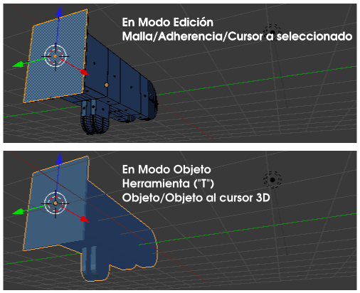ELEMENTO MÓVIL DEL BRAZO
Le llamamos brazo_movil. Aquí sí que es rigurosamente imprescindible que se sitúe el Origen en el lugar de la bisagra para que el giro se lleve a cabo correctamente. Sólo hay que seleccionar el bucle de lados adecuado para garantizar la precisión.
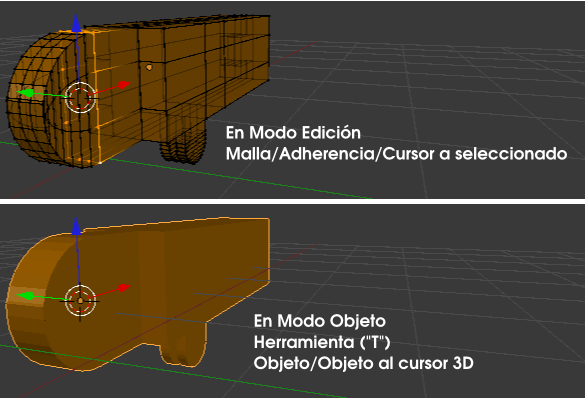Ahora queda garantizar que este Origen se sitúa en el lugar adecuado respecto brazo_inmovil. De brazo_inmovil seleccionamos estos dos bucles para hace Malla/Adherencia/Cursor a seleccionado.
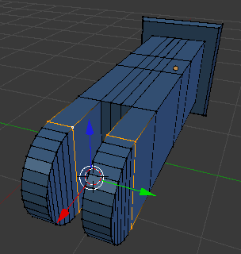
Y ahora con brazo_movil en Modo Objeto  hacemos Objeto/Adherencia/Selección a cursor (esto garantiza la precisión en la bisagra a la hora de hacer el giro de brazo_movil).
hacemos Objeto/Adherencia/Selección a cursor (esto garantiza la precisión en la bisagra a la hora de hacer el giro de brazo_movil).
ELEMENTO GRUESO DEL PISTÓN
Lo denominamos piston_grueso. Es un cilindro hueco por uno de los dos extremos y con un añadido en la zona del pasador para situar su Origen allí y que el giro quede armónico. El método es igual que el usado para brazo_movil.
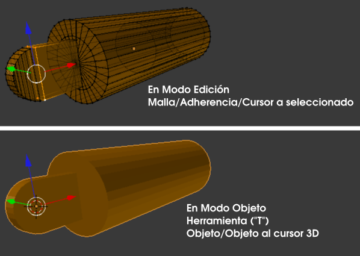Nuevamente es necesario garantizar la rotación de este elemento respecto a brazo_inmovil. Así que en ese otro objeto seleccionamos estos bucles de lados para hacer Malla/Adherencia/Cursor a seleccionado.
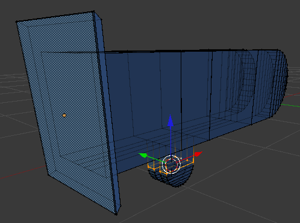Con el objeto piston_grueso hacemos Objeto/Adherencia/Selección a cursor y se garantiza la precisión en el giro.
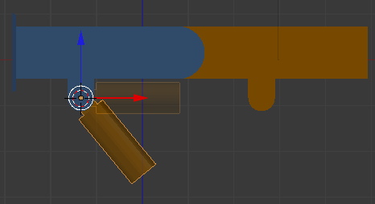ELEMENTO DELGADO DEL PISTÓN
Su nombre es piston_fino. También cuenta con un añadido para el pasador y que determina la localización del Origen. Su edición respecto a brazo_movil es extactamente igual que la que acabamos de hacer para piston_grueso respecto a brazo_inmovil. Lo primero es seleccionar estos bucles de piston_fino para hacer Malla/Adherencia/Cursor a seleccionado.
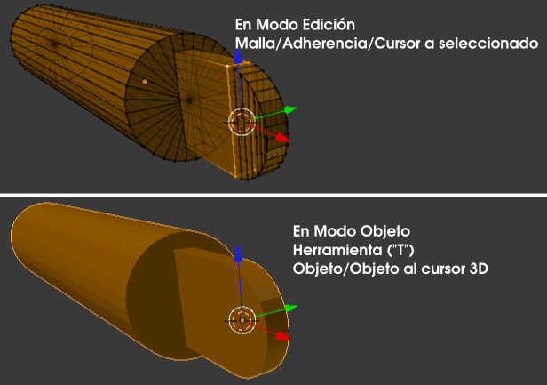Y para garantizar la precisión en el giro seleccionamos estos bucles de brazo_movil para hacer Malla/Adherencia/Cursor a seleccionado...
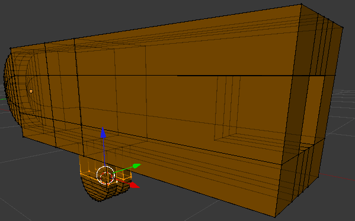...y con piston_fino hacemos Objeto/Adherencia/Selección a cursor.
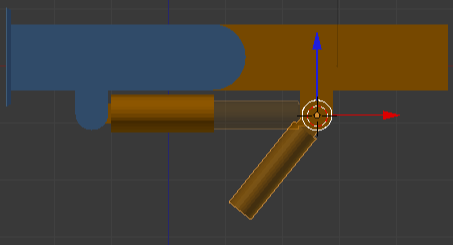Un objeto más
Para la configuración de la mecánica restringida que nos traemos entre manos es necesario disponer de un elemento más. Se trata de un objeto vacío (Añadir/Vacío) que en principio lo sacamos a escena sin preocuparnos mucho de su localización.
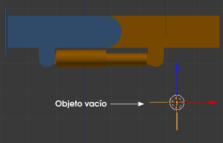Usando los recursos de Adherencia lo colocamos coincidiendo con el Origen de piston_fino:
- Seleccionamos piston_fino y hacemos Objeto/Adherencia/Cursor a seleccionado.
- Seleccionamos el objeto vacío y hacemos Objeto/Adherencia/Seleccionado a cursor.
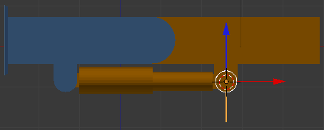